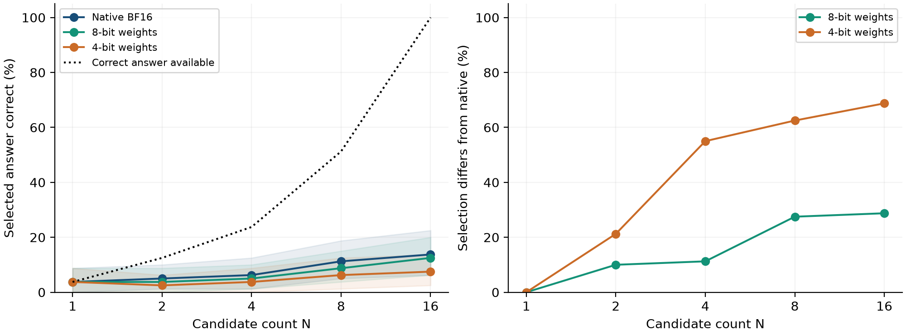

Weight Precision and Answer Selection: A Local Pilot with Small Language-Model Judges
Working paper v0.1 · Not peer reviewed
Abstract
Weight quantization reduces parameter storage, but its effect on answer selection need not be summarized by candidate-level classification accuracy. We report a controlled local pilot using Qwen2.5-0.5B-Instruct as a prompted arithmetic judge at native BF16, 8-bit and 4-bit weight precision. The experiment evaluates 120 constructed questions, with 40 used for threshold development and 80 held out; each contains 16 distinct integer answers with exactly one correct answer. At N=16, selected-answer accuracy is 13.8% at native precision, 12.5% at 8 bits, and 7.5% at 4 bits. The 4-bit versus native paired difference is -6.2 percentage points, with a 95% question-bootstrap interval of [-15.0, 1.2]. We additionally evaluate development-calibrated selective rescoring. Native 0.5B batching changes N=16 selections on 28.7% of test questions, revealing substantial implementation sensitivity. A subsequent 1.5B same-family extension on the same questions yields N=16 accuracies of 28.7% (native), 28.7% (8-bit), and 20.0% (4-bit). This study reports actual quantized-model inference over artificial answer pools, not generated reasoning traces. It establishes neither a general scaling law nor a novel state-of-the-art method.
Experimental design
Qwen2.5-0.5B-Instruct and Qwen2.5-1.5B-Instruct judged the same constructed arithmetic answers using native BF16, 8-bit and 4-bit weights. The larger-model extension was added after the first pilot and uses the same questions; it is not an independent dataset replication. Everything ran locally on an Apple M1 laptop.
Each question has 16 distinct answers, exactly one of which is correct. The answers are constructed numerical distractors, not model-generated reasoning traces. Ground truth is checked with integer arithmetic. Native-precision agreement is measured separately from correctness.
Measured results at 16 candidates
| Model | Precision | Correct | Accuracy | Changed vs. native |
|---|---|---|---|---|
| 0.5B | Native BF16 | 11/80 | 13.8% | 0.0% |
| 0.5B | 8-bit weights | 10/80 | 12.5% | 28.7% |
| 0.5B | 4-bit weights | 6/80 | 7.5% | 68.8% |
| 1.5B | Native BF16 | 23/80 | 28.7% | 0.0% |
| 1.5B | 8-bit weights | 23/80 | 28.7% | 7.5% |
| 1.5B | 4-bit weights | 16/80 | 20.0% | 43.8% |
All results use the same 80 test questions. See the paper for paired uncertainty intervals, ties, all candidate counts, and the batching control. The native model is a fallible reference, not ground truth.

Initial 0.5B pilot. Full 1.5B extension plots and results are included in the artifact.
Limitations
The measurements document how numerical precision affects selection in this setup. They do not establish that generating more answers is generally counterproductive or that a selective rescoring method is more efficient in deployment. Constructed pools, weak general-purpose judges, small test size, score ties, and backend arithmetic limit what can be concluded.
Supplementary materials
AI-assistance disclosure: Codex assisted with research scoping, literature retrieval, implementation, local experiment execution, analysis, writing, and website preparation. Independent author review is needed before external academic submission. No conference or journal acceptance is claimed.
Model sources: Qwen 0.5B and Qwen 1.5B. Full references appear in the manuscript.